Hướng dẫn cách kê khai bổ sung thuế GTGT chi tiết: Cách kê khai điều chỉnh Tăng - Giảm thuế GTGT, điều chỉnh Đầu ra - Đầu vào, Doanh thu, kê khai bổ sung hóa đơn bỏ sót... trên phần mềm HTKK mới nhất.
I. Quy định về kê khai bổ sung điều chỉnh thuế GTGT:
1. Luật quản lý thuế:
+ Trước ngày 01/07/2026, thực hiện theo quy định tại Điều 47 Luật quản lý thuế số 38/2019/QH14 được sửa đổi tại khoản 6, điều 6 của Luật sửa đổi, bổ sung số: 56/2024/QH15 như sau:
1. Người nộp thuế phát hiện hồ sơ khai thuế đã nộp cho cơ quan thuế có sai, sót thì được khai bổ sung hồ sơ khai thuế trong thời hạn 10 năm kể từ ngày hết thời hạn nộp hồ sơ khai thuế của kỳ tính thuế có sai, sót trong trường hợp sau đây:
a) Trước khi cơ quan thuế, cơ quan có thẩm quyền công bố quyết định thanh tra, kiểm tra;
b) Hồ sơ không thuộc phạm vi, thời kỳ thanh tra, kiểm tra thuế nêu tại quyết định thanh tra, kiểm tra thuế.
Đối với những nội dung thuộc phạm vi thanh tra, kiểm tra, người nộp thuế được bổ sung hồ sơ giải trình theo quy định của pháp luật về thuế, pháp luật về thanh tra và các trường hợp thực hiện theo kết luận, quy định của cơ quan chuyên ngành có thẩm quyền liên quan đến nội dung xác định nghĩa vụ thuế của người nộp thuế
Hồ sơ khai bổ sung hồ sơ khai thuế bao gồm:
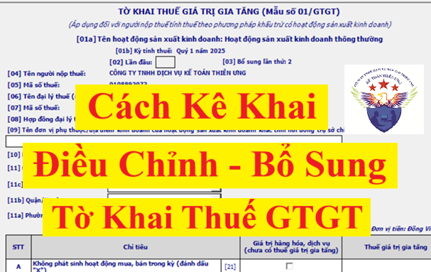
+ Tờ khai bổ sung;
+ Bản giải trình khai bổ sung và các tài liệu có liên quan.
+ Từ ngày 01/07/2026 trở đi thực hiện theo quy định tại khoản 5, điều 12 của Luật Quản lý thuế số 108/2025/QH15 (Ban hành ngày 10/12/2025, có hiệu lực từ ngày 01/7/2026) như sau:
2. Nghị định 126/2020/NĐ-CP quy định chi tiết thi hành một số điều của Luật Quản lý thuế :
Điều 12. Khai thuế, khoản thu khác; tính thuế, khoản thu khác; khấu trừ thuế
5. Người nộp thuế phát hiện hồ sơ khai thuế, khoản thu khác đã nộp cho cơ quan thuế có sai, sót thì được khai bổ sung hồ sơ khai thuế, khoản thu khác trong thời hạn 05 năm kể từ ngày hết thời hạn nộp hồ sơ khai thuế, khoản thu khác của kỳ tính thuế có sai, sót đối với các trường hợp sau:
a) Trước khi cơ quan thuế, cơ quan có thẩm quyền công bố quyết định thanh tra, kiểm tra;
b) Hồ sơ không thuộc phạm vi, thời kỳ thanh tra, kiểm tra thuế, khoản thu khác nêu tại quyết định thanh tra, kiểm tra;
c) Hồ sơ không thuộc trường hợp cơ quan điều tra yêu cầu không được khai bổ sung hồ sơ khai thuế, khoản thu khác để phục vụ điều tra vụ án;
d) Người nộp thuế phát hiện hồ sơ khai thuế đã nộp còn sai, sót liên quan đến phạm vi, thời kỳ đã thanh tra, kiểm tra dẫn đến phát sinh tăng số thuế phải nộp, giảm số thuế đã được miễn, giảm, hoàn, giảm số thuế được khấu trừ, giảm số thuế đã nộp thừa thì người nộp thuế được bổ sung hồ sơ giải trình với cơ quan thuế. Cơ quan thuế có trách nhiệm rà soát hồ sơ giải trình liên quan đến phạm vi, thời kỳ đã thanh tra, kiểm tra của người nộp thuế, trường hợp chấp thuận hồ sơ giải trình của người nộp thuế thì cơ quan thuế ban hành thông báo chấp thuận cho người nộp thuế điều chỉnh hồ sơ khai thuế.
Người nộp thuế bị xử lý theo quy định như đối với trường hợp cơ quan thuế, cơ quan có thẩm quyền thanh tra, kiểm tra phát hiện. Công chức thanh tra, kiểm tra thuế liên quan đến hồ sơ giải trình chịu trách nhiệm về sai, sót chưa được phát hiện đầy đủ qua kiểm tra trong trường hợp tuân thủ chưa đúng quy định tại điểm o khoản 1 Điều 38 của Luật này;
đ) Các trường hợp thực hiện theo kết luận, quyết định của cơ quan nhà nước có thẩm quyền liên quan đến nội dung xác định nghĩa vụ thuế của người nộp thuế. Trường hợp người nộp thuế khai bổ sung làm tăng số thuế phải nộp, giảm số thuế được khấu trừ, miễn, giảm, hoàn thì bị xử lý theo quy định như đối với trường hợp cơ quan thuế, cơ quan có thẩm quyền thanh tra, kiểm tra phát hiện;
e) Chính phủ quy định các trường hợp cơ quan điều tra đề nghị không được khai bổ sung hồ sơ khai thuế, khoản thu khác để phục vụ điều tra vụ án và trách nhiệm thông báo của cơ quan điều tra cho cơ quan thuế khi kết thúc yêu cầu liên quan đến vụ án quy định tại điểm c khoản này và các trường hợp khai bổ sung theo kết luận, quyết định của cơ quan nhà nước có thẩm quyền liên quan đến nội dung xác định nghĩa vụ thuế của người nộp thuế quy định tại điểm đ khoản này.
Theo khoản 4, điều 7 của nghị định 126/2020/NĐ-CP thì:
Điều 7. Hồ sơ khai thuế
4. Người nộp thuế được nộp hồ sơ khai bổ sung cho từng hồ sơ khai thuế có sai, sót theo quy định tại Điều 47 Luật Quản lý thuế và theo mẫu quy định của Bộ trưởng Bộ Tài chính. Người nộp thuế khai bổ sung như sau:
4. Người nộp thuế được nộp hồ sơ khai bổ sung cho từng hồ sơ khai thuế có sai, sót theo quy định tại Điều 47 Luật Quản lý thuế và theo mẫu quy định của Bộ trưởng Bộ Tài chính. Người nộp thuế khai bổ sung như sau:
a) Trường hợp khai bổ sung không làm thay đổi nghĩa vụ thuế thì chỉ phải nộp Bản giải trình khai bổ sung và các tài liệu có liên quan, không phải nộp Tờ khai bổ sung.
Trường hợp chưa nộp hồ sơ khai quyết toán thuế năm thì người nộp thuế khai bổ sung hồ sơ khai thuế của tháng, quý có sai, sót, đồng thời tổng hợp số liệu khai bổ sung vào hồ sơ khai quyết toán thuế năm.
Trường hợp đã nộp hồ sơ khai quyết toán thuế năm thì chỉ khai bổ sung hồ sơ khai quyết toán thuế năm; riêng trường hợp khai bổ sung tờ khai quyết toán thuế thu nhập cá nhân đối với tổ chức, cá nhân trả thu nhập từ tiền lương, tiền công thì đồng thời phải khai bổ sung tờ khai tháng, quý có sai, sót tương ứng.
b) Người nộp thuế khai bổ sung dẫn đến tăng số thuế phải nộp hoặc giảm số thuế đã được ngân sách nhà nước hoàn trả thì phải nộp đủ số tiền thuế phải nộp tăng thêm hoặc số tiền thuế đã được hoàn thừa và tiền chậm nộp vào ngân sách nhà nước (nếu có).
Trường hợp khai bổ sung chỉ làm tăng hoặc giảm số thuế giá trị gia tăng còn được khấu trừ chuyển kỳ sau thì phải kê khai vào kỳ tính thuế hiện tại. Người nộp thuế chỉ được khai bổ sung tăng số thuế giá trị gia tăng đề nghị hoàn khi chưa nộp hồ sơ khai thuế của kỳ tính thuế tiếp theo và chưa nộp hồ sơ đề nghị hoàn thuế.
-----------------------------------------------------------------------------------
II. Tổng quan về việc kê khai bổ sung điều chỉnh thuế GTGT:
1. Khi nào thực hiện làm tờ khai điều chỉnh bổ sung tờ khai thuế GTGT?
2. Thời hạn kê khai điều chỉnh, bổ sung tờ khai thuế GTGT có sai sót:
1. Khi nào thực hiện làm tờ khai điều chỉnh bổ sung tờ khai thuế GTGT?
Sau khi đã nộp tờ khai thuế và đã nhận được thông báo chấp nhận hồ sơ khai thuế của cơ quan thuế (gửi qua mail)
=> Sau đó doanh nghiệp phát hiện ra tờ khai thuế đã nộp cho cơ quan thuế có sai, sót thì thực hiện làm tờ khai điều chỉnh bổ sung cho tờ khai thuế có sai sót đó để nộp cho CQT
Ví dụ: Ngày 20/04/2026, Công ty Kế Toán Diệu Tâm đã nộp tờ khai thuế GTGT lần đầu của quý 1/2026 qua mạng cho cơ quan thuế và đã nhận được thông báo chấp nhận hồ sơ khai thuế lần đầu của cơ quan thuế gửi qua mail vào ngày 21/04/2026.
=> Đến ngày 25/04/2026, Công ty Kế Toán Diệu Tâm phát hiện ra tờ khai thuế GTGT lần đầu của quý 1/2026 có sai sót thì Công ty Kế Toán Diệu Tâm phải thực hiện làm tờ khai điều chỉnh bổ sung => để điều chỉnh thông tin bị sai, sót trên tờ khai thuế GTGT lần đầu của quý 1/2026
=> Đến ngày 25/04/2026, Công ty Kế Toán Diệu Tâm phát hiện ra tờ khai thuế GTGT lần đầu của quý 1/2026 có sai sót thì Công ty Kế Toán Diệu Tâm phải thực hiện làm tờ khai điều chỉnh bổ sung => để điều chỉnh thông tin bị sai, sót trên tờ khai thuế GTGT lần đầu của quý 1/2026
Trước ngày 01/07/2026 thì thực hiện theo khoản 6, điều 6 của Luật sửa đổi, bổ sung số: 56/2024/QH15 thì: Doanh nghiệp được khai bổ sung hồ sơ khai thuế trong thời hạn 10 năm kể từ ngày hết thời hạn nộp hồ sơ khai thuế của kỳ tính thuế có sai, sót trong trường hợp sau đây:
a) Trước khi cơ quan thuế, cơ quan có thẩm quyền công bố quyết định thanh tra, kiểm tra;
b) Hồ sơ không thuộc phạm vi, thời kỳ thanh tra, kiểm tra thuế nêu tại quyết định thanh tra, kiểm tra thuế.
Đối với những nội dung thuộc phạm vi thanh tra, kiểm tra, người nộp thuế được bổ sung hồ sơ giải trình theo quy định của pháp luật về thuế, pháp luật về thanh tra và các trường hợp thực hiện theo kết luận, quy định của cơ quan chuyên ngành có thẩm quyền liên quan đến nội dung xác định nghĩa vụ thuế của người nộp thuế.
Còn từ ngày 01/07/2026 trở đi thì thực hiện theo Luật Quản lý thuế số 108/2025/QH15: chỉ được khai bổ sung hồ sơ khai thuế trong thời hạn 05 năm kể từ ngày hết thời hạn nộp hồ sơ khai thuế của kỳ tính thuế có sai, sót3. Hồ sơ khai bổ sung tờ khai thuế GTGT bao gồm:
+ Tờ khai bổ sung
+ Bản giải trình khai bổ sung và các tài liệu có liên quan.
+ Bản giải trình khai bổ sung và các tài liệu có liên quan.
(Lưu ý: Trường hợp khai bổ sung không làm thay đổi nghĩa vụ thuế thì chỉ phải nộp Bản giải trình khai bổ sung và các tài liệu có liên quan, không phải nộp Tờ khai bổ sung)
------------------------------------------------------------------------------------------------
III. Hướng dẫn cách kê khai bổ sung điều chỉnh thuế GTGT trên phần mềm HTKK:
Tổng quan khi kê khai điều chỉnh bổ sung sẽ có những bước như sau:
- Bước 1: Vào phần mềm HTKK => Chọn tờ khai đã kê khai sai
- Bước 2: Chọn kỳ đã kê khai sai
- Bước 3: Chọn trạng thái "Tờ khai bổ sung", Chọn số lần khai bổ sung, kiểm tra lại ngày lập KHBS
- Bước 4: Bấm “Đồng ý” để vào tờ khai điều chỉnh
- Bước 5: Điều chỉnh tờ khai
- Bước 6: Nhập mã giao dịch điện tử Tại tab “01-KHBS”:
- Bước 7: Bấm “Tổng hợp KHBS”
- Bước 8: Xác định kết quả của việc kê khai điều chỉnh bổ sung
- Bước 9: Ghi lý do điều chỉnh
- Bước 10: Bấm “Ghi” để kiểm tra thông tin
- Bước 11: Kết xuất XML và gửi tờ khai bổ sung qua mạng
- Bước 12: Nộp số tiền thuế tăng thêm sau khi điều chỉnh và tiền phạt chậm nộp (Nếu có)
- Bước 12: Nộp số tiền thuế tăng thêm sau khi điều chỉnh và tiền phạt chậm nộp (Nếu có)
Điều kiện để có thể thực hiện kê khai điều chỉnh bổ sung trên PM HTKK: Trên phần mềm HTKK tại máy tính thực hiện phải tồn tại tờ khai của kỳ có sai sót
Ví dụ: Muốn làm kê khai điều chỉnh bổ sung cho kỳ quý 1/2026 thì tại phần mềm HTKK trên máy tính đang muốn thực hiện làm điều chỉnh bổ sung đó phải tồn tại (tức là có dữ liệu) của tờ khai quý 1/2026 rồi
Cách điều chỉnh tờ khai thuế GTGT: Tìm đến lỗi sai trên tờ khai để sửa thành đúng: thực hiện theo đúng nguyên tắc “Sai đâu - Sửa đấy”
=> Tìm đến tất cả các lỗi sai trên tờ khai để điều chỉnh thành đúng (1 lần làm tờ khai điều chỉnh có thể điều chỉnh cho tất cả các lỗi sai (không phân biệt sai bao nhiêu lỗi, sai ở bao nhiêu chỉ tiêu, đầu ra hay đầu vào -> Cứ phát hiện ra chỉ tiêu đó bị sai thì điều chỉnh tất)
+ Đối với lỗi sai tại phụ lục thì thực hiện điều chỉnh tại phụ lục
+ Đối với lỗi sai tại chỉ tiêu 22 thì thực hiện sửa trực tiếp tại chỉ tiêu 22
+ Đối với các lỗi sai liên quan đến hóa đơn đầu vào thì:
+ Đối với lỗi sai tại chỉ tiêu 22 thì thực hiện sửa trực tiếp tại chỉ tiêu 22
+ Đối với các lỗi sai liên quan đến hóa đơn đầu vào thì:
=> Thực hiện điều chỉnh: sửa trực tiếp tại các chỉ tiêu liên quan như 23, 24, 25 hoặc 23a, 24a (Cứ chỉ tiêu nào sai thì sửa chỉ tiêu đó thành đúng, hoặc tất cả các chỉ tiêu này đều bị sai thì sửa tất cả thành đúng)
+ Đối với các lỗi sai liên quan đến hóa đơn đầu ra thì:
=> Thực hiện điều chỉnh: sửa trực tiếp tại các chỉ tiêu liên quan như: 26, 29, 30, 31, 32, 33 hoặc 32a (Hóa đơn đầu ra đó ghi thuế suất bao nhiêu % -> liên quan đến chỉ tiêu nào thì sửa chỉ tiêu đó thành đúng)
+ Đối với lỗi sai tại chỉ tiêu 37, 38 hoặc chỉ tiêu 39a thì thực hiện sửa trực tiếp tại chỉ tiêu 37, 38 hoặc chỉ tiêu 39a
Cách thực hiện điều chỉnh:
+ Sai cao hơn thì trừ đi (Khi sai cao hơn thì cần phải điều chỉnh giảm bằng cách trừ đi)
+ Sai thấp hơn thì cộng vào (Khi sai thấp hơn thì cần phải điều chỉnh tăng bằng cách cộng vào)
+ Sai thấp hơn thì cộng vào (Khi sai thấp hơn thì cần phải điều chỉnh tăng bằng cách cộng vào)
Sau đây Kế Toán Diệu Tâm sẽ đưa ra 1 vài tình huống cụ thể để hướng dẫn các bạn cách thực hiện từng bước kê khai điều chỉnh bổ sung tờ khai thuế GTGT trên phần mềm HTKK:
Tình huống số 1: Điều chỉnh tăng đầu ra
Ngày 10/04/2026, Công ty Diệu Tâm đã làm và nộp tờ khai thuế GTGT của quý 1/2026 về cơ quan thuế như sau:
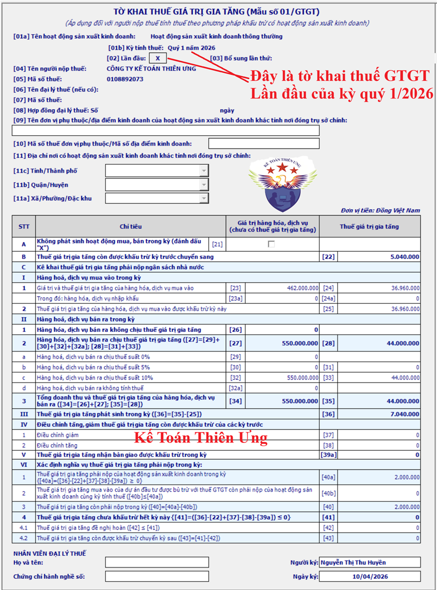
Sau khi nộp tờ khai thuế GTGT của quý 1/2026 qua mạng thì công ty Kế Toán Diệu Tâm đã nhận được thông báo xác nhận hồ sơ khai thuế điện tử qua mail vào ngày 10/04/2026
=> Và đến ngày 11/04/2026, công ty Kế Toán Diệu Tâm đã nhận được thông báo chấp nhận tờ khai thuế GTGT lần đầu của kỳ quý 1/2026
=> Và đến ngày 11/04/2026, công ty Kế Toán Diệu Tâm đã nhận được thông báo chấp nhận tờ khai thuế GTGT lần đầu của kỳ quý 1/2026
=> Công ty Diệu Tâm đã nộp số tiền thuế phát sinh dương tại chỉ tiêu 40 = 2.000.000đ về NSNN vào ngày 15/04/2026
Đến ngày 20/05/2026, kế toán phát hiện ra tờ khai thuế GTGT của quý 1/2026 kê khai sót 1 tờ hóa đơn đầu ra số 1453 ngày 18/03/2026 như sau:
Đến ngày 20/05/2026, kế toán phát hiện ra tờ khai thuế GTGT của quý 1/2026 kê khai sót 1 tờ hóa đơn đầu ra số 1453 ngày 18/03/2026 như sau:
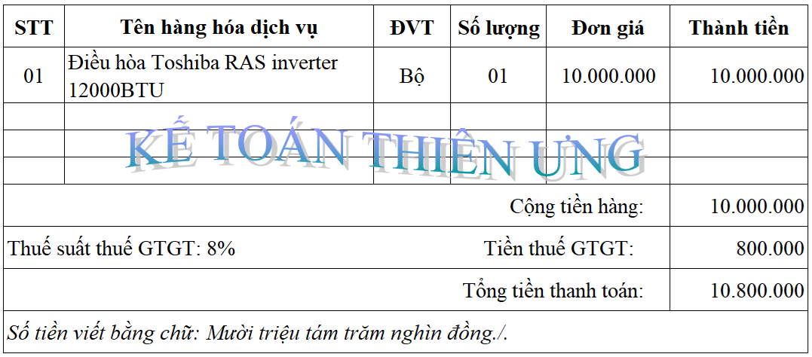
Theo quy định thì: Hóa đơn đầu ra của kỳ nào phải kê khai vào để kỳ đó để kê khai tính thuế GTGT vào đúng kỳ phát sinh
Mà hóa đơn đầu ra số óa đơn đầu ra số 1453 phát sinh vào ngày 18/03/2026 (tức là thuộc vào quý 1/2026) nên phải kê khai vào kỳ quý 1/2026
Nhưng thực tế công ty Diệu Tâm chưa thực hiện kê khai hóa đơn đầu ra số 1453 tờ khai thuế GTGT của kỳ quý 1/2026 => Đây là trường hợp kê khai sót hóa đơn đầu ra => Làm cho tờ khai thuế GTGT của quý 1/2026 bị sai sót (Kê khai thiếu doanh thu và thuế GTGT của hàng hóa dịch vụ bán ra)
=> Do:
+ Tờ khai thuế GTGT của quý 1/2026 đã nộp cho cơ quan thuế vào ngày 10/04/2026 và đã nhận được thông báo bước 2 chấp nhận của CQT vào ngày 11/04/2026 rồi.
+ Và trong thời hạn được khai bổ sung hồ sơ khai thuế (trong thời hạn 10 năm kể từ ngày hết thời hạn nộp hồ sơ khai thuế của kỳ tính thuế có sai, sót)
+ Và trong thời hạn được khai bổ sung hồ sơ khai thuế (trong thời hạn 10 năm kể từ ngày hết thời hạn nộp hồ sơ khai thuế của kỳ tính thuế có sai, sót)
=> Nên: Công ty Diệu Tâm được thực hiện làm tờ khai điều chỉnh bổ sung cho tờ khai thuế GTGT quý 1/2026 có sai sót đó
Trình tự thực hiện làm tờ khai điều chỉnh bổ sung trên phần mềm HTKK:
Bước 1: Đăng nhập vào phần mềm HTKK bằng MST của DN cần kê khai điều chỉnh bổ sung => Rồi chọn tờ khai đã kê khai sai:
Làm sai tờ khai thuế nào thì vào mục loại Thuế đó để chọn
=> Làm sai tờ khai thuế GTGT mẫu 01/GTGT (TT80/2021) => sẽ vào mục “Thuế Giá Trị Gia Tăng” để chọn loại tờ khai thuế GTGT mẫu 01/GTGT (TT80/2021)
Bước 2: Chọn kỳ đã kê khai sai
Tờ khai đó bị sai ở kỳ nào thì chọn đúng kỳ bị sai đó
=> Làm sai tờ khai thuế GTGT của kỳ quý 1/2026 => Khi làm điều chỉnh bổ sung sẽ chọn quý 1/2026
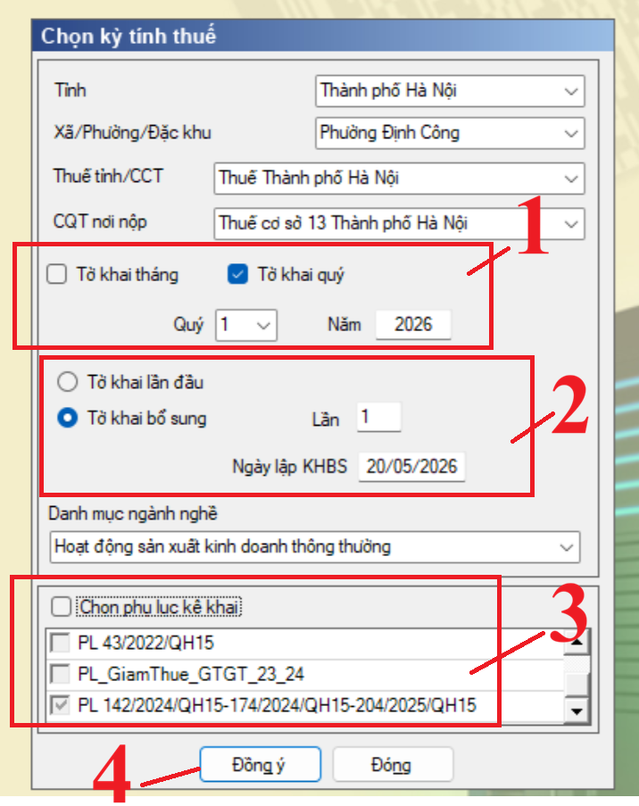
Bước 3: Chọn trạng thái tờ khai bổ sung, Chọn số lần khai bổ sung, kiểm tra lại ngày lập KHBS (khai bổ sung)
+ Chọn trạng thái tờ khai: Kể từ thời điểm Doanh nghiệp đã nhận được Thông báo chấp nhận hồ sơ khai thuế đối với Tờ khai thuế “Lần đầu” mà muốn nộp lại tờ khai của kỳ tính thuế đó thì phải chọn trạng thái tờ khai là Tờ khai bổ sung
(Không phân biệt trong hay ngoài thời hạn nộp tờ khai)
+ Chọn số lần khai bổ sung: Khai bổ sung lần thứ mấy thì chọn số lần như vậy
Lần đầu tiên làm tờ khai bổ sung cho kỳ bị sai sót thì là lần 1 => Cứ thế tăng lên cho các lần sau nếu tiếp tục phát hiện ra sai sót, tiếp tục làm tờ khai bổ sung
Trong tình huống, công ty Kế Toán Diệu Tâm đang thực hiện làm tờ khai điều chỉnh bổ sung lần thứ nhất cho tờ khai thuế GTGT của kỳ quý 1/2026 nên sẽ để là “Lần 1”
Kiểm tra lại ngày lập KHBS (khai bổ sung): Phần mềm mặc định lấy theo ngày trên máy tính (Nhưng vẫn cho phép sửa).
Lưu ý: Ngày lập tờ khai bổ sung phải <= Hạn nộp tờ khai chính thức + 10 năm. Ngày bổ sung không được lớn hơn ngày hiện tại (tức là không được nhập ngày lập KHBS lớn hơn ngày trên máy tính của bạn)
Lưu ý đối với phần phụ lục: Nếu ở tờ khai lần đầu hoặc lần bổ sung N-1 mà đã kê khai phụ lục nào thì ở Tờ khai bổ sung/ Tờ khai bổ sung lần N, Phần mềm sẽ mặc định tích chọn phụ lục đó và cho phép doanh nghiệp đính kèm thêm cả các phụ lục khác chưa được kê khai.
Bước 4: Bấm “Đồng ý” để vào tờ khai điều chỉnh
Sau khi đã lựa chọn xong các thông tin tại bảng “Chọn kỳ tính thuế” thì các bạn bấm vào “Đồng ý” để vào tờ khai điều chỉnh
Bước 5: Điều chỉnh tờ khai
Phần mềm sẽ lấy dữ liệu của Tờ khai gần nhất trong cùng kỳ tính thuế làm dữ liệu mặc định trên Tờ khai điều chỉnh:
+ Nếu là tờ khai bổ sung lần 1 thì lấy dữ liệu của tờ khai lần đầu
+ Nếu là tờ khai bổ sung lần 2 thì lấy dữ liệu lần bổ sung 1
+ Nếu là tờ khai bổ sung lần n thì lấy dữ liệu lần bổ sung n-1
.....
=> Các bạn sẽ kê khai bổ sung điều chỉnh trực tiếp trên Tờ khai điều chỉnh, kê khai như tờ khai thay thế, sau đó phần mềm sẽ tự động lấy các chỉ tiêu điều chỉnh liên quan đến số thuế phải nộp lên KHBS (Các bạn không kê khai trên KHBS)
Để điều chỉnh được tờ khai thuế GTGT thì các bạn thực hiện: Tìm đến lỗi sai trên tờ khai để sửa thành đúng: thực hiện theo đúng nguyên tắc “Sai đâu - Sửa đấy” + Nếu là tờ khai bổ sung lần 1 thì lấy dữ liệu của tờ khai lần đầu
+ Nếu là tờ khai bổ sung lần 2 thì lấy dữ liệu lần bổ sung 1
+ Nếu là tờ khai bổ sung lần n thì lấy dữ liệu lần bổ sung n-1
.....
=> Các bạn sẽ kê khai bổ sung điều chỉnh trực tiếp trên Tờ khai điều chỉnh, kê khai như tờ khai thay thế, sau đó phần mềm sẽ tự động lấy các chỉ tiêu điều chỉnh liên quan đến số thuế phải nộp lên KHBS (Các bạn không kê khai trên KHBS)
Xác định chỉ tiêu sai sót cần điều chỉnh trong tình huống số 1 của công ty Diệu Tâm:
+ Vì lỗi sai là: Kê khai sót hóa đơn đầu ra => Nên sẽ liên qua đến các chỉ tiêu đầu ra là từ 26 đến 32a
+ Vì thuế suất trên hóa đơn đầu ra bị bỏ sót số 1453 là 8% nên phải điều chỉnh tại phụ lục giảm thuế và 2 chỉ tiêu là chỉ tiêu 32 và chỉ tiêu 33
+ Vì bỏ sót hóa đơn đầu ra tức là kê khai thiếu nên phải thực hiện điều chỉnh Tăng
+ Vì thuế suất trên hóa đơn đầu ra bị bỏ sót số 1453 là 8% nên phải điều chỉnh tại phụ lục giảm thuế và 2 chỉ tiêu là chỉ tiêu 32 và chỉ tiêu 33
+ Vì bỏ sót hóa đơn đầu ra tức là kê khai thiếu nên phải thực hiện điều chỉnh Tăng
Bằng cách:
+/ Kê khai thêm vào Phụ lục giảm thuế GTGT
+ Cộng thêm số tiền trên hóa đơn số 1453 vào tại 2 chỉ tiêu là chỉ tiêu 32 và chỉ tiêu 33
Cách thực hiện trên phần mềm HTKK như sau:
+ Bước 1: Kê khai bổ sung đầu ra được giảm thuế vào phụ lục giảm thuế:
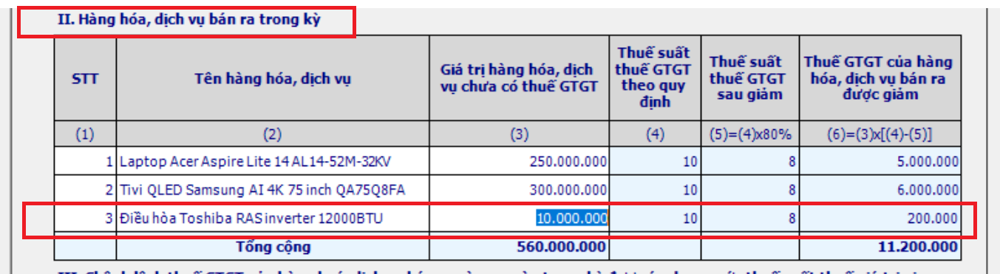
(Sau khi bạn gõ xong số tiền vào cột 3 thì bạn nhấp phím Tab hoặc bấm ghi để phầm mềm tổng hợp số liệu vào các chỉ tiêu liên quan)
+ Bước 2: Kiểm tra số liệu tại chỉ tiêu 32 và 33 trên tờ khai điều chỉnh xem phần mềm đã tổng hợp số liệu kê khai bổ sung vào chưa
Phần mềm sẽ tổng hợp số liệu như sau:
| Chỉ tiêu [32] điều chỉnh | = | Chỉ tiêu [32] trên tờ khai lần đầu bị sai, sót | + | Giá trị HH-DV bán ra chưa thuế bị bỏ sót trên hóa đơn đầu ra đã kê khai bổ sung trên Phụ lục giảm thuế |
| = | 550.000.000 | + | 10.000.000 | |
| = |
560.000.000 => Đây là giá trị đúng cần của tờ khai thuế GTGT quý 1/2026 => Phần mềm HTKK đã tự động tổng hợp số tiền rồi bạn không cần phải gõ lại nữa |
|||
| Chỉ tiêu [33] điều chỉnh | = | Chỉ tiêu [33] trên tờ khai lần đầu bị sai, sót | + | Tiền thuế GTGT bị bỏ sót trên hóa đơn đầu ra |
| = | 44.000.000 | + | 800.000 (=8% x giá trị HH-DV chưa có thuế đã kê khai trên phụ lục giảm thuế) | |
| = |
44.800.000 => Đây là giá trị đúng cần của tờ khai thuế GTGT quý 1/2026 => Phần mềm HTKK đã tự động tổng hợp số tiền rồi bạn không cần phải gõ lại nữa |
|||
| Lưu ý: |
Chỉ có đầu ra (kê khai trên mục II ở bên phụ lục giảm thuế) thì phần mềm mới tự động tổng hợp số liệu lên tờ khai điều chỉnh thôi nhé Còn nếu bạn kê khai điều chỉnh bổ sung đầu vào được giảm thuế thì ngoài việc phải kê khai điều chỉnh bổ sung ở phụ lục giảm thuế thì bạn còn phải sửa trực tiếp tại các chỉ tiêu liên quan (23, 24, 25, 23a, 24a) trên tờ khai điều chỉnh |
|||
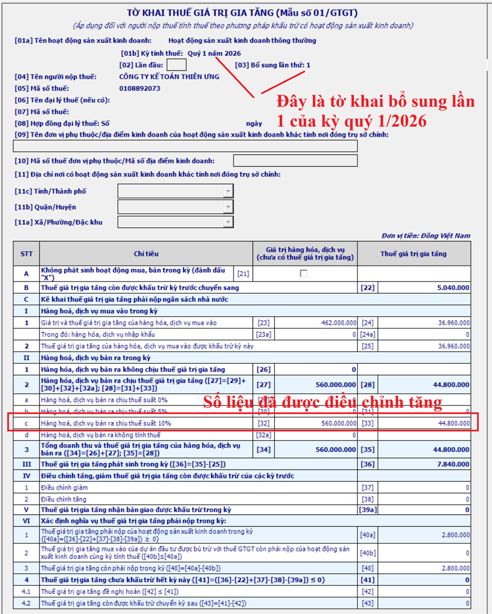
Bước 6: Nhập mã giao dịch điện tử Tại tab “01-KHBS”:
Thực hiện tại tab TỜ KHAI BỔ SUNG (01-KHBS)
Tại Chỉ tiêu [02]: Mã giao dịch điện tử của tờ khai lần đầu có sai, sót cần bổ sung, điều chỉnh.
Tiến hành nhập mã giao dịch điện tử trên Thông báo chấp nhận hồ sơ khai thuế theo mẫu 01-2/TB-TĐT của hồ sơ khai thuế lần đầu. Để có mã giao dịch điện tử này thì các bạn thực hiện tra cứu như sau:
+ Cách 1: Tra cứu trên hệ thống dichvucong.gdt.gov.vn
+ Cách 2: Kiểm tra tại thông báo tiếp nhận hoặc xác nhận hồ sơ thuế điện tử đã được gửi vào Mail cho doanh nghiệp
Lưu ý: Hiện nay thì nếu bạn không nhập mã giao dịch điện tử lên tờ khai bổ sung 01/KHBS thì khi bạn bấm “Ghi” phần mềm sẽ cảnh báo (và đưa ra thông tin là "Bắt buộc nhập")
Nhưng nếu bạn không nhập thông tin về giao dịch điện tử lên tờ khai bổ sung 01/KHBS thì bạn vẫn kết xuất được tờ khai vẫn nộp được hồ sai khai bổ sung qua mạng
Bước 7: Bấm “Tổng hợp KHBS”
Để phần mềm tổng hợp số liệu lên tờ khai bổ sung (01/KHBS) và bản giải trình khai bổ sung (01-1/KHBS)
Sau khi bấm "Tổng hợp KHBS" thì phần mềm sẽ hiện thị ra thông báo "Tổng hợp dữ liệu lên KHBS thành công" thì các bạn bấm vào "Đóng"
Bước 8: Xác định kết quả của việc kê khai điều chỉnh bổ sung
Xác định tại tờ khai bổ sung (01/KHBS):
Xác định tại: Phần A. Xác định tăng/giảm số thuế phải nộp và tiền chậm nộp, tăng/giảm số thuế được khấu trừ, tăng/giảm số thuế đề nghị hoàn:
I. Xác định tăng/giảm số thuế phải nộp và tiền chậm nộp:
Số thuế phải nộp trên tờ khai điều chỉnh tăng/giảm: tại dòng tổng cộng, Mã chỉ tiêu số [10] Tăng/giảm số thuế phải nộp
Xác định tại tờ khai bổ sung (01/KHBS):
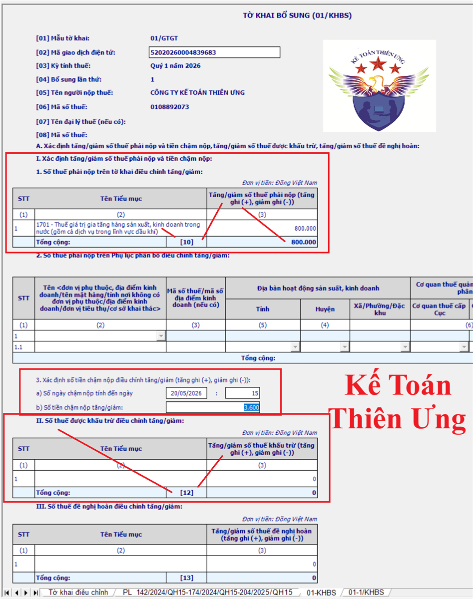
Xác định tại: Phần A. Xác định tăng/giảm số thuế phải nộp và tiền chậm nộp, tăng/giảm số thuế được khấu trừ, tăng/giảm số thuế đề nghị hoàn:
I. Xác định tăng/giảm số thuế phải nộp và tiền chậm nộp:
Số thuế phải nộp trên tờ khai điều chỉnh tăng/giảm: tại dòng tổng cộng, Mã chỉ tiêu số [10] Tăng/giảm số thuế phải nộp
Trường hợp 1: Mã chỉ tiêu số [10] > 0 => Kết quả: Tăng số tiền thuế GTGT còn phải nộp
Trường hợp 2: Mã chỉ tiêu số [10] < 0 => Kết quả: giảm số thuế GTGT phải nộp
Trường hợp 2: Mã chỉ tiêu số [10] < 0 => Kết quả: giảm số thuế GTGT phải nộp
II. Số thuế được khấu trừ điều chỉnh tăng/giảm:
tại dòng tổng cộng, Mã chỉ tiêu số [12] Tăng/giảm số thuế khấu trừ
Trường hợp 3: Mã chỉ tiêu số [12] > 0 => Kết quả: Tăng số tiền thuế GTGT được khấu trừ
Trường hợp 4: Mã chỉ tiêu số [12] < 0 => Kết quả: Giảm số tiền thuế GTGT được khấu trừ
Trường hợp 4: Mã chỉ tiêu số [12] < 0 => Kết quả: Giảm số tiền thuế GTGT được khấu trừ
Các xử lý kết quả trong từng trường hợp như sau:
Xác định kết quả:
+ Hiển thị ra 0 tức là không liên quan
+ Phát sinh số tiền với giá trị dương -> Tức là tăng
+ Phát sinh số tiền có dấu ngoặc đơn là giá trị âm -> Tức là giảm
+ Hiển thị ra 0 tức là không liên quan
+ Phát sinh số tiền với giá trị dương -> Tức là tăng
+ Phát sinh số tiền có dấu ngoặc đơn là giá trị âm -> Tức là giảm
Lưu ý: Kết quả có thể xuất hiện tại 1 hoặc nhiều trường hợp nêu trên (Xuất hiện kết quả tại đâu thì các bạn xử lý kết quả tại đó)
* Trường hợp 1: Mã chỉ tiêu số [10] > 0 => Kết quả: Tăng số tiền thuế GTGT còn phải nộp
* Trường hợp 1: Mã chỉ tiêu số [10] > 0 => Kết quả: Tăng số tiền thuế GTGT còn phải nộp
=> Phải mang số tiền phát sinh dương tại chỉ tiêu 10 đi nộp, cùng với số tiền phạt chậm nộp tại mục 3, phần I (nếu có) (phần mềm tự động tính, cho phép sửa -> Cần phải kiểm tra và xác định lại (nếu phần mềm tính không đúng)
Lưu ý:
Theo quy định tại khoản 1, điều 55 của Luật quản lý thuế thì:
Theo quy định tại khoản 1, điều 55 của Luật quản lý thuế thì:
“Trường hợp khai bổ sung hồ sơ khai thuế, thời hạn nộp thuế là thời hạn nộp hồ sơ khai thuế của kỳ tính thuế có sai, sót.”
Nên:
+ Nếu làm tờ khai điều chỉnh bổ sung trong thời hạn nộp tiền thuế của kỳ tính thuế có hồ sơ sai sót đó thì dù có phát sinh chỉ tiêu số [10] > 0 tức là tăng số thuế phải nộp thì sẽ không bị phạt chậm nộp (dòng “b) Số tiền chậm nộp” trong mục 3 sẽ vẫn bằng 0)
+ Nếu làm tờ khai điều chỉnh bổ sung ngoài thời hạn nộp tiền của kỳ tính thuế có hồ sơ sai sót đó thì sẽ có phát sinh chỉ tiêu số [10] > 0 tức là tăng số thuế phải nộp thì đây là số phạt chậm nộp phải nộp về NSNN cũng với số tiền phải nộp thêm tại chỉ tiêu số 10 (dòng “b) Số tiền chậm nộp” trong mục 3 sẽ vẫn xuất hiện số tiền chậm nộp) (Tình huống số 1 của công ty Diệu Tâm Thuộc vào trường hợp này)
Vì làm tờ khai bổ sung ngoài thời hạn nộp tiền thuế của kỳ tính thuế có hồ sơ sai sót (quý 1/2026) nên có phát sinh số ngày chậm nộp và tiền chậm nộp tại mục 3.
Tại mục 3. Xác định số tiền chậm nộp phần mềm đang tự động tính ra:
+ Nếu làm tờ khai điều chỉnh bổ sung trong thời hạn nộp tiền thuế của kỳ tính thuế có hồ sơ sai sót đó thì dù có phát sinh chỉ tiêu số [10] > 0 tức là tăng số thuế phải nộp thì sẽ không bị phạt chậm nộp (dòng “b) Số tiền chậm nộp” trong mục 3 sẽ vẫn bằng 0)
+ Nếu làm tờ khai điều chỉnh bổ sung ngoài thời hạn nộp tiền của kỳ tính thuế có hồ sơ sai sót đó thì sẽ có phát sinh chỉ tiêu số [10] > 0 tức là tăng số thuế phải nộp thì đây là số phạt chậm nộp phải nộp về NSNN cũng với số tiền phải nộp thêm tại chỉ tiêu số 10 (dòng “b) Số tiền chậm nộp” trong mục 3 sẽ vẫn xuất hiện số tiền chậm nộp) (Tình huống số 1 của công ty Diệu Tâm Thuộc vào trường hợp này)
Vì làm tờ khai bổ sung ngoài thời hạn nộp tiền thuế của kỳ tính thuế có hồ sơ sai sót (quý 1/2026) nên có phát sinh số ngày chậm nộp và tiền chậm nộp tại mục 3.
Tại mục 3. Xác định số tiền chậm nộp phần mềm đang tự động tính ra:
+ Số ngày chậm nộp là 19 ngày
+ Số tiền chậm nộp là: 4.560 = 800.000 x 19 x 0,03%
+ Số tiền chậm nộp là: 4.560 = 800.000 x 19 x 0,03%
Lưu ý như sau:
Phần xác định số ngày và số tiền chậm nộp này phần mềm HTKK cho phép sửa
Và kế toán cần phải kiểm tra đối chiếu và xác định lại theo quy định như sau:
Theo điểm b, khoản 1, điều 59 của Luật quản lý thuế số 38/2019/QH14 thì:
Người nộp thuế khai bổ sung hồ sơ khai thuế làm tăng số tiền thuế phải nộp hoặc cơ quan quản lý thuế, cơ quan nhà nước có thẩm quyền kiểm tra, thanh tra phát hiện khai thiếu số tiền thuế phải nộp thì phải nộp tiền chậm nộp đối với số tiền thuế phải nộp tăng thêm kể từ ngày kế tiếp ngày cuối cùng thời hạn nộp thuế của kỳ tính thuế có sai, sót hoặc kể từ ngày hết thời hạn nộp thuế của tờ khai hải quan ban đầu;
Theo điểm b, khoản 1, điều 59 của Luật quản lý thuế số 38/2019/QH14 thì:
Người nộp thuế khai bổ sung hồ sơ khai thuế làm tăng số tiền thuế phải nộp hoặc cơ quan quản lý thuế, cơ quan nhà nước có thẩm quyền kiểm tra, thanh tra phát hiện khai thiếu số tiền thuế phải nộp thì phải nộp tiền chậm nộp đối với số tiền thuế phải nộp tăng thêm kể từ ngày kế tiếp ngày cuối cùng thời hạn nộp thuế của kỳ tính thuế có sai, sót hoặc kể từ ngày hết thời hạn nộp thuế của tờ khai hải quan ban đầu;
Mà thời hạn nộp tiền thuế của quý 01/2026 chậm nhất là ngày 30/04/2026. Nhưng do ngày 30/04/2026 rơi vào ngày nghỉ lễ (Kỳ nghỉ lễ 30/04, 01/05 năm 2026 được nghỉ 4 ngày từ ngày 30/04 đến hết ngày 03/05/2026) => Thời hạn nộp được chuyển sang ngày làm việc tiếp theo là ngày 04/05/2026 (Đây là ngày cuối cùng thời hạn nộp thuế của kỳ tính thuế có sai, sót quý 1/2026)
=> Ngày kế tiếp của ngày 04/05/2026 là ngày: 05/05/2026
=> Số ngày chậm nộp sẽ được tính từ ngày 05/05/2026 (ngày kế tiếp ngày cuối cùng thời hạn nộp thuế của kỳ tính thuế có sai, sót) đến ngày 19/05/2026 (ngày liền kề trước ngày số tiền thuế tăng thêm đã nộp vào ngân sách nhà nước (Theo điểm b, khoản 2, điều 59 của Luật quản lý thuế)) (Công ty Diệu Tâm làm tờ khai điều chỉnh bổ sung vào ngày 20/05/2026 và sẽ nộp số tiền thuế tăng thêm phải nộp là 800.000đ về NSNN vào ngày 20/05/2026)
=> Từ ngày 05/05/2026 đến ngày 19/05/2026 là: 19 – 05 + 01 = 15 ngày (Đây là số ngày để tính tiền chậm nộp)
=> Số tiền chậm nộp = 800.000 x 15 x 0,03% = 3.600đ
(Mức tính tiền chậm nộp bằng 0,03%/ngày tính trên số tiền thuế chậm nộp là thực hiện theo quy định tại điểm a, khoản 2, điều 59 của Luật quản lý thuế số 38/2019/QH14)
=> Sau khi đã xác định lại được số ngày chậm nộp và số tiền chậm nộp thì thực hiện gõ lại vào tờ khai bổ sung (01/KHBS)
(Doanh nghiệp chỉ cần xác định lại số ngày chậm nộp => Sửa lại số ngày chậm nộp vào tờ khai bổ sung (01/KHBS) => Sau đó phần mềm sẽ tự động tính lại số tiền chậm nộp theo số ngày đã được điều chỉnh)
=> Số ngày chậm nộp sẽ được tính từ ngày 05/05/2026 (ngày kế tiếp ngày cuối cùng thời hạn nộp thuế của kỳ tính thuế có sai, sót) đến ngày 19/05/2026 (ngày liền kề trước ngày số tiền thuế tăng thêm đã nộp vào ngân sách nhà nước (Theo điểm b, khoản 2, điều 59 của Luật quản lý thuế)) (Công ty Diệu Tâm làm tờ khai điều chỉnh bổ sung vào ngày 20/05/2026 và sẽ nộp số tiền thuế tăng thêm phải nộp là 800.000đ về NSNN vào ngày 20/05/2026)
=> Từ ngày 05/05/2026 đến ngày 19/05/2026 là: 19 – 05 + 01 = 15 ngày (Đây là số ngày để tính tiền chậm nộp)
=> Số tiền chậm nộp = 800.000 x 15 x 0,03% = 3.600đ
(Mức tính tiền chậm nộp bằng 0,03%/ngày tính trên số tiền thuế chậm nộp là thực hiện theo quy định tại điểm a, khoản 2, điều 59 của Luật quản lý thuế số 38/2019/QH14)
=> Sau khi đã xác định lại được số ngày chậm nộp và số tiền chậm nộp thì thực hiện gõ lại vào tờ khai bổ sung (01/KHBS)
(Doanh nghiệp chỉ cần xác định lại số ngày chậm nộp => Sửa lại số ngày chậm nộp vào tờ khai bổ sung (01/KHBS) => Sau đó phần mềm sẽ tự động tính lại số tiền chậm nộp theo số ngày đã được điều chỉnh)
=> Vậy là, sau khi làm tờ khai điều chỉnh bổ sung lần 1 cho tờ khai thuế GTGT quý 1/2026 thì công ty Diệu Tâm phải nộp các khoản tiền sau về NSNN:
+ Tiền thuế phải nộp tăng thêm: 800.000đ (Số tiền phát sinh dương tại chỉ tiêu số 10 trên TỜ KHAI BỔ SUNG (01/KHBS)
+ Tiền phạt chậm nộp: 3.600đ (Lưu ý số tiền này đang được tính toán đến ngày 20/05/2026 là nộp vào NSNN, tức là ngày 20/05/2026 sẽ nộp nốt khoản tiền thuế tăng thêm 800.000đ về NSNN => Nếu hết ngày 20/05/2026 mà công ty Diệu Tâm vẫn chưa nộp số tiền này về NSNN thì phải tính lại số tiền chậm nộp theo số ngày thực tế chậm nộp)
=> Ngày 20/05/2026, Công ty Diệu Tâm đã nộp thêm số tiền 800.000 + 3.600 = 803.600đ về NSNN
+ Tiền phạt chậm nộp: 3.600đ (Lưu ý số tiền này đang được tính toán đến ngày 20/05/2026 là nộp vào NSNN, tức là ngày 20/05/2026 sẽ nộp nốt khoản tiền thuế tăng thêm 800.000đ về NSNN => Nếu hết ngày 20/05/2026 mà công ty Diệu Tâm vẫn chưa nộp số tiền này về NSNN thì phải tính lại số tiền chậm nộp theo số ngày thực tế chậm nộp)
=> Ngày 20/05/2026, Công ty Diệu Tâm đã nộp thêm số tiền 800.000 + 3.600 = 803.600đ về NSNN
Trường hợp 2: Mã chỉ tiêu số [10] < 0 => Kết quả: giảm số thuế GTGT phải nộp
Trường hợp 2.1: Chưa nộp số tiền thuế ở tờ khai sai sót đang điều chỉnh: thì thực hiện bù trừ và nộp theo số đã điều chỉnh
Ví dụ:
Ngày 5/10/2026: Làm tờ khai thuế GTGT lần đầu cho kỳ quý 3/2026 ra chỉ tiêu 40 = 10.000.000 => Đã nộp hồ sơ kê khai thuế quý 3/2026 qua mạng và đã nhận được thông báo chấp nhận hồ sơ khai thuế => Nhưng chưa nộp tiền thuế 10.000.000 phát sinh tại chỉ tiêu 40 đó về NSNN.
=> Đến ngày 8/10/2026: Phát hiện ra tờ khai quý 3/2026 bị sai => Làm tờ khai điều chỉnh bổ sung lần 1 => Ra số tiền tại mã chỉ tiêu số 10 trên tờ khai bổ sung 01/KHBS là âm 2.000.000 (Tức là giảm số tiền thuế phải nộp 2.000.000đ)
=> Sau khi nộp tờ khai điều chỉnh bổ sung lần 1: thì số tiền thuế còn phải nộp là: 10.000.000 (tờ khai lần đầu) – 2.000.000 (tờ khai bổ sung lần 1) = 8.0000.000 (đây chính là số tiền sẽ nộp về cơ quan thuế)
Ngày 5/10/2026: Làm tờ khai thuế GTGT lần đầu cho kỳ quý 3/2026 ra chỉ tiêu 40 = 10.000.000 => Đã nộp hồ sơ kê khai thuế quý 3/2026 qua mạng và đã nhận được thông báo chấp nhận hồ sơ khai thuế => Nhưng chưa nộp tiền thuế 10.000.000 phát sinh tại chỉ tiêu 40 đó về NSNN.
=> Đến ngày 8/10/2026: Phát hiện ra tờ khai quý 3/2026 bị sai => Làm tờ khai điều chỉnh bổ sung lần 1 => Ra số tiền tại mã chỉ tiêu số 10 trên tờ khai bổ sung 01/KHBS là âm 2.000.000 (Tức là giảm số tiền thuế phải nộp 2.000.000đ)
=> Sau khi nộp tờ khai điều chỉnh bổ sung lần 1: thì số tiền thuế còn phải nộp là: 10.000.000 (tờ khai lần đầu) – 2.000.000 (tờ khai bổ sung lần 1) = 8.0000.000 (đây chính là số tiền sẽ nộp về cơ quan thuế)
Trường hợp 2.2: Đã nộp số tiền thuế ở tờ khai sai sót đang điều chỉnh: thì Doanh nghiệp tự theo dõi số tiền phát sinh âm tại chỉ tiêu 10 này và bù trừ vào các kỳ sau, khi phát sinh tiền thuế phải nộp (Trường hợp này được xác định là đã nộp thừa tiền thuế)
Ví dụ:
Qúy 1/2026: Ngày 25/04/2026, công ty A thực hiện làm và nộp tờ khai thuế GTGT lần đầu của Q1/2026
Có số tiền phát sinh tại chỉ tiêu 40 – thuế GTGT phải nộp = 5.000.000 => Đã nộp về NSNN
Ngày 6/05/2026, Công ty A phát hiện tờ khai thuế GTGT của quý 1/2026 có sai sót và thực hiện làm điều chỉnh bổ sung lần 1 tờ khai thuế GTGT của Q1/2026:
Trên tờ khai bổ sung (01/KHBS) Ra kết quả tại chỉ tiêu 10 = (1.000.000) (Kết quả trong ngoặc tức là âm <=> giảm số thuế GTGT phải nộp 1.000.000đ)
=> Sau khi điều chỉnh tờ khai xong => Nộp tờ khai điều chỉnh bổ sung lần 1 về về cơ quan thuế rồi thì đây chính là số tiền thuế GTGT công ty A đã nộp thừa => Công ty A sẽ tự theo dõi và bù trừ vào các kỳ sau
Ngày 10/07/2026: Công ty A thực hiện làm và nộp tờ khai thuế GTGT của Q2/2026
Có số tiền phát sinh tại chỉ tiêu 40 – thuế GTGT phải nộp = 3.000.000
Tiến hành bù từ: 1.000.000 phát sinh âm tại chỉ tiêu số 10 trên tờ khai điều chỉnh bổ sung 01/KHBS của quý 1/2026 với số tiền thuế GTGT phải nộp của quý 2/2026 là 3.000.000đ => Sau khi bù trừ thì số tiền còn phải nộp về NSNN là 2.000.000đ
Qúy 1/2026: Ngày 25/04/2026, công ty A thực hiện làm và nộp tờ khai thuế GTGT lần đầu của Q1/2026
Có số tiền phát sinh tại chỉ tiêu 40 – thuế GTGT phải nộp = 5.000.000 => Đã nộp về NSNN
Ngày 6/05/2026, Công ty A phát hiện tờ khai thuế GTGT của quý 1/2026 có sai sót và thực hiện làm điều chỉnh bổ sung lần 1 tờ khai thuế GTGT của Q1/2026:
Trên tờ khai bổ sung (01/KHBS) Ra kết quả tại chỉ tiêu 10 = (1.000.000) (Kết quả trong ngoặc tức là âm <=> giảm số thuế GTGT phải nộp 1.000.000đ)
=> Sau khi điều chỉnh tờ khai xong => Nộp tờ khai điều chỉnh bổ sung lần 1 về về cơ quan thuế rồi thì đây chính là số tiền thuế GTGT công ty A đã nộp thừa => Công ty A sẽ tự theo dõi và bù trừ vào các kỳ sau
Ngày 10/07/2026: Công ty A thực hiện làm và nộp tờ khai thuế GTGT của Q2/2026
Có số tiền phát sinh tại chỉ tiêu 40 – thuế GTGT phải nộp = 3.000.000
Tiến hành bù từ: 1.000.000 phát sinh âm tại chỉ tiêu số 10 trên tờ khai điều chỉnh bổ sung 01/KHBS của quý 1/2026 với số tiền thuế GTGT phải nộp của quý 2/2026 là 3.000.000đ => Sau khi bù trừ thì số tiền còn phải nộp về NSNN là 2.000.000đ
Trường hợp 3: Mã chỉ tiêu số [12] > 0 => Kết quả: Tăng số tiền thuế GTGT được khấu trừ
=> Cho số tiền phát sinh dương tại chỉ tiêu 12 trên tờ khai bổ sung “01/KHBS” này vào chỉ tiêu 38 – Điều chỉnh tăng trên tờ khai 01/GTGT của kỳ kê khai thuế GTGT hiện tại (kỳ làm bổ sung điều chỉnh)
Ví dụ: Ngày 20/08/2026 (Quý 3/2026) thực hiện điều chỉnh bổ sung tờ khai quý 2/2026 (Đây là kỳ làm tờ khai điều chỉnh bổ sung )
Trên tờ khai bổ sung 01/KHBS ra chỉ tiêu 12 = 5.000.000 (Tăng số thuế GTGT được khấu trừ)
=> Cho số tiền 5.000.000 này vào chỉ tiêu 38 của Qúy 3/2026 (đây là kỳ hiện tại, kỳ (quý) thực hiện làm tờ khai điều chỉnh bổ sung)
Trên tờ khai bổ sung 01/KHBS ra chỉ tiêu 12 = 5.000.000 (Tăng số thuế GTGT được khấu trừ)
=> Cho số tiền 5.000.000 này vào chỉ tiêu 38 của Qúy 3/2026 (đây là kỳ hiện tại, kỳ (quý) thực hiện làm tờ khai điều chỉnh bổ sung)
Trường hợp 4: Mã chỉ tiêu số [12] < 0 => Kết quả: Giảm số tiền thuế GTGT được khấu trừ
=> Cho số tiền phát sinh âm tại chỉ tiêu 12 trên tờ khai bổ sung “01/KHBS” này vào chỉ tiêu 37 – Điều chỉnh giảm trên tờ khai 01/GTGT của kỳ kê khai thuế GTGT hiện tại
Bước 9: Ghi lý do điều chỉnh
Thực hiện tại phụ lục 01-1/KHBS bản giải trình khai bổ sung
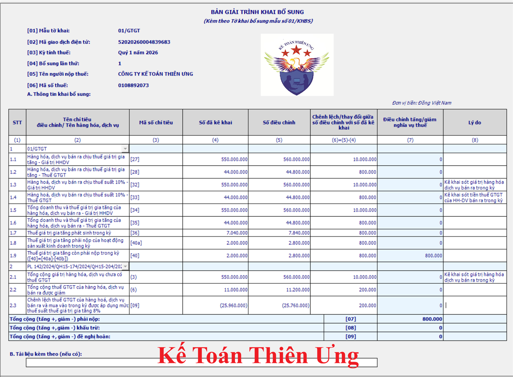
Bước 10: ấn “Ghi” để kiểm tra thông tin
Bước 11: Kết xuất XML và gửi tờ khai bổ sung qua mạng
Bước 12: Nộp số tiền thuế tăng thêm sau khi điều chỉnh và tiền phạt chậm nộp (Nếu có)
Bước 12: Nộp số tiền thuế tăng thêm sau khi điều chỉnh và tiền phạt chậm nộp (Nếu có)
Đối với tình huống của công ty Diệu Tâm thì sau khi làm tờ khai điều chỉnh bổ sung cho kỳ tính thuế quý 1/2026 thì thì ra kết quả là tại Mã chỉ tiêu số [10] = 800.000 > 0
=> Kết quả thuộc vào Trường hợp 1: Tăng số tiền thuế GTGT còn phải nộp => Phải nộp về NSNN số tiền phát sinh dương tại chỉ tiêu số 10 là 800.000, cùng với số tiền phạt chậm nộp tại mục 3, phần I là 3.600đ
Như vậy là các bạn đã kê khai điều chỉnh, bổ sung thuế GTGT xong!
=======================================
Tình huống số 2: Điều chỉnh giảm đầu vào
Sau khi kê khai bổ sung lần 1 vào ngày 20/05/2026, thì đến ngày 05/06/2026, công ty Kế Toán Diệu Tâm tiếp tục phát hiện ra tờ khai thuế GTGT của quý 1/2026 có sai sót: kê khai thừa đầu vào
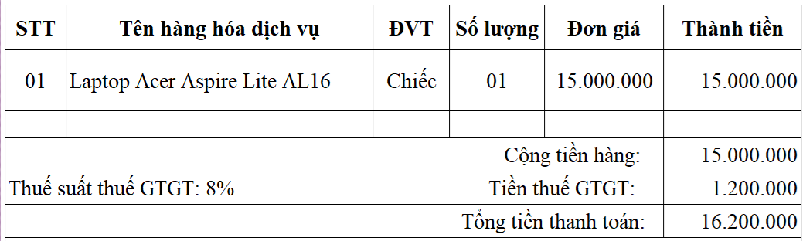
Đây là hóa đơn đầu vào phát sinh vào ngày 01/04/2026 (thuộc quý 2/2026) nhưng kế toán lại kê khai nhầm vào tờ khai thuế GTGT của quý 1/2026 => Nên làm cho tờ khai thuế GTGT của kỳ quý 1/2026 bị sai
=> Vì vẫn trong thời hạn được kê khai điều chỉnh bổ sung nên công ty Kế Toán Diệu Tâm vẫn được kê khai điều chỉnh bổ sung tờ khai thuế GTGT của quý 1/2026
=> Ngày 05/06/2026, công ty Kế Toán Diệu Tâm tiến hành làm tờ khai bổ sung lần 2 cho tờ khai thuế GTGT của quý 1/2026
Trình tự thực hiện làm tờ khai điều chỉnh bổ sung lần 2 trên phần mềm HTKK:
Bước 1: Đăng nhập vào phần mềm HTKK bằng MST của DN cần kê khai điều chỉnh bổ sung => Rồi chọn tờ khai đã kê khai sai:
Làm sai tờ khai thuế nào thì vào mục loại Thuế đó để chọn
=> Làm sai tờ khai thuế GTGT mẫu 01/GTGT (TT80/2021) => sẽ vào mục “Thuế Giá Trị Gia Tăng” để chọn loại tờ khai thuế GTGT mẫu 01/GTGT (TT80/2021)
Bước 2: Chọn kỳ đã kê khai sai
Tờ khai đó bị sai ở kỳ nào thì chọn đúng kỳ bị sai đó
=> Làm sai tờ khai thuế GTGT của kỳ quý 1/2026 => Khi làm điều chỉnh bổ sung sẽ chọn quý 1/2026
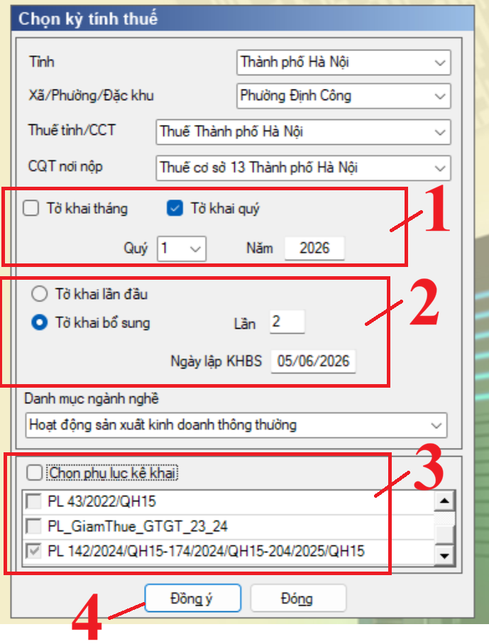
Bước 3: Chọn trạng thái tờ khai bổ sung, Chọn số lần khai bổ sung, kiểm tra lại ngày lập KHBS (khai bổ sung)
+ Chọn trạng thái tờ khai: Tờ khai bổ sung
+ Chọn số lần khai bổ sung: Trong tình huống số 2, công ty Kế Toán Diệu Tâm đang thực hiện làm tờ khai điều chỉnh bổ sung lần thứ 2 cho tờ khai thuế GTGT của kỳ quý 1/2026 nên sẽ để là “Lần 2”
Bước 4: Bấm “Đồng ý” để vào tờ khai điều chỉnh
Sau khi đã lựa chọn xong các thông tin tại bảng “Chọn kỳ tính thuế” thì các bạn bấm vào “Đồng ý” để vào tờ khai điều chỉnh
Bước 5: Điều chỉnh tờ khai:
Thực hiện theo đúng nguyên tắc “Sai đâu - Sửa đấy”
Xác định chỉ tiêu sai sót cần điều chỉnh trong tình huống số 2 của công ty Diệu Tâm:
Vì lỗi sai là: Kê khai thừa hóa đơn đầu vào và hóa đơn đầu vào này được giảm thuế GTGT
=> Nên sẽ:
=> Nên sẽ:
+ Kê khai điều chỉnh tại phụ lục giảm thuế GTGT
+ Điều chỉnh tại các chỉ tiêu liên quan đến đầu vào là các chỉ tiêu 23, 24 và 25 trên tờ khai thuế GTGT
+ Vì đã kê khai thừa nên phải thực hiện điều chỉnh giảm
Bằng cách:
+ Khai điều chỉnh (loại bỏ hoặc trừ đi) số liệu đã kê khai của hóa đơn này tại phụ lục giảm thuế GTGT
+ Trừ đi phần thừa đó tại 3 chỉ tiêu 23, 24 và 25 trên tờ khai thuế GTGT
+ Khai điều chỉnh (loại bỏ hoặc trừ đi) số liệu đã kê khai của hóa đơn này tại phụ lục giảm thuế GTGT
+ Trừ đi phần thừa đó tại 3 chỉ tiêu 23, 24 và 25 trên tờ khai thuế GTGT
Cụ thể các bước như sau:
+ Bước 1: Kê khai điều chỉnh tại phụ lục giảm thuế GTGT
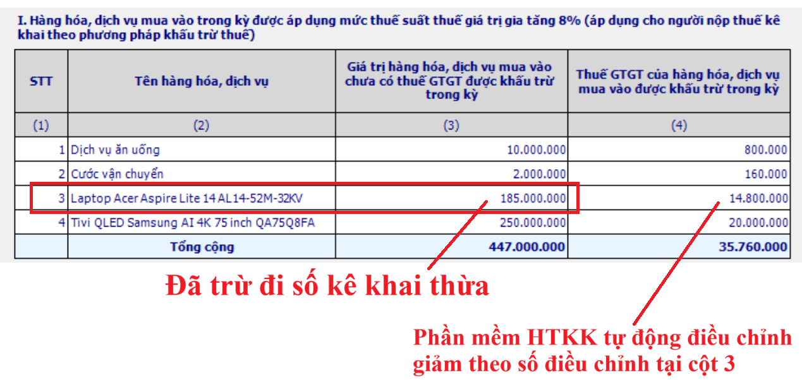
+ Bước 2: Xác định số liệu đúng để gõ vào phần mềm:
| Chỉ tiêu [23] điều chỉnh | = | Chỉ tiêu [23] trên tờ khai lần đầu bị sai, sót | - | Giá trị HH-DV mua vào đã kê khai thừa |
| = | 462.000.000 | - | 15.000.000 | |
| = |
447.000.000 => Đây là giá trị đúng để đưa vào tờ khai thuế GTGT của quý 1/2026 => Gõ số tiền này vào chỉ tiêu 23 trên “Tờ khai điều chỉnh” trên phần mềm HTKK |
|||
| Chỉ tiêu [24] điều chỉnh | = | Chỉ tiêu [24] trên tờ khai lần đầu bị sai, sót | - | Tiền thuế GTGT đầu vào đã kê khai thừa |
| = | 36.960.000 | - | 1.200.000 | |
| = |
35.760.000 => Đây là giá trị đúng để đưa vào tờ khai thuế GTGT của quý 1/2026 => Số tiền này sẽ được kê khai điều chỉnh vào chỉ tiêu 24 trên “Tờ khai điều chỉnh” trên phần mềm HTKK |
|||
| Chỉ tiêu [25] điều chỉnh | = | Chỉ tiêu [25] trên tờ khai lần đầu bị sai, sót | - | Tiền thuế GTGT đầu vào được khấu trừ đã kê khai thừa |
| = | 36.960.000 | - | 1.200.000 | |
| = |
35.760.000 => Đây là giá trị đúng để đưa vào tờ khai thuế GTGT của quý 1/2026 => Số tiền này sẽ được kê khai điều chỉnh vào chỉ tiêu 25 trên “Tờ khai điều chỉnh” trên phần mềm HTKK |
|||
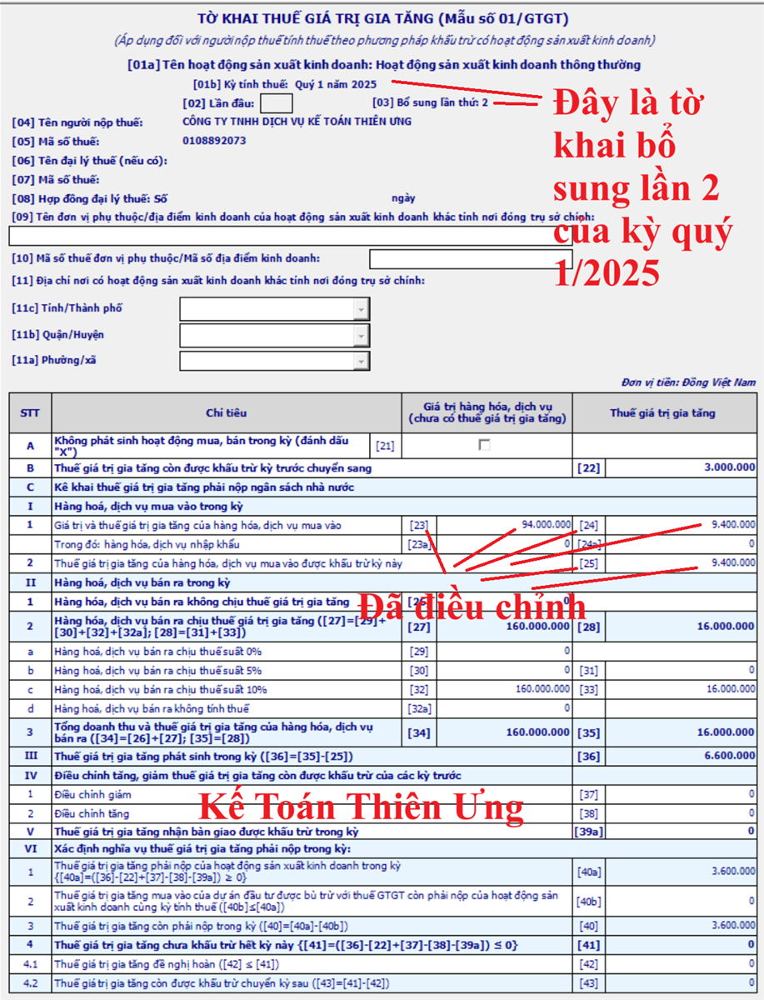
Bước 6: Nhập mã giao dịch điện tử Tại tab “01-KHBS”:
Thực hiện tại tab TỜ KHAI BỔ SUNG (01-KHBS)
Tại Chỉ tiêu [02]: Mã giao dịch điện tử của tờ khai lần đầu có sai, sót cần bổ sung, điều chỉnh.
Tiến hành nhập mã giao dịch điện tử trên Thông báo chấp nhận hồ sơ khai thuế theo mẫu 01-2/TB-TĐT của hồ sơ khai thuế lần đầu.
Bước 7: Bấm “Tổng hợp KHBS”
Để phần mềm tổng hợp số liệu lên tờ khai bổ sung (01/KHBS) và bản giải trình khai bổ sung (01-1/KHBS)
Sau khi bấm "Tổng hợp KHBS" thì phần mềm sẽ hiện thị ra thông báo "Tổng hợp dữ liệu lên KHBS thành công" thì các bạn bấm vào "Đóng"
Bước 8: Xác định kết quả của việc kê khai điều chỉnh bổ sung
Xác định tại tờ khai bổ sung (01/KHBS):
Kết quả đang thuộc vào trường hợp 1:
Mã chỉ tiêu số [10] > 0 => Kết quả: Tăng số tiền thuế GTGT còn phải nộp
Xác định tại tờ khai bổ sung (01/KHBS):
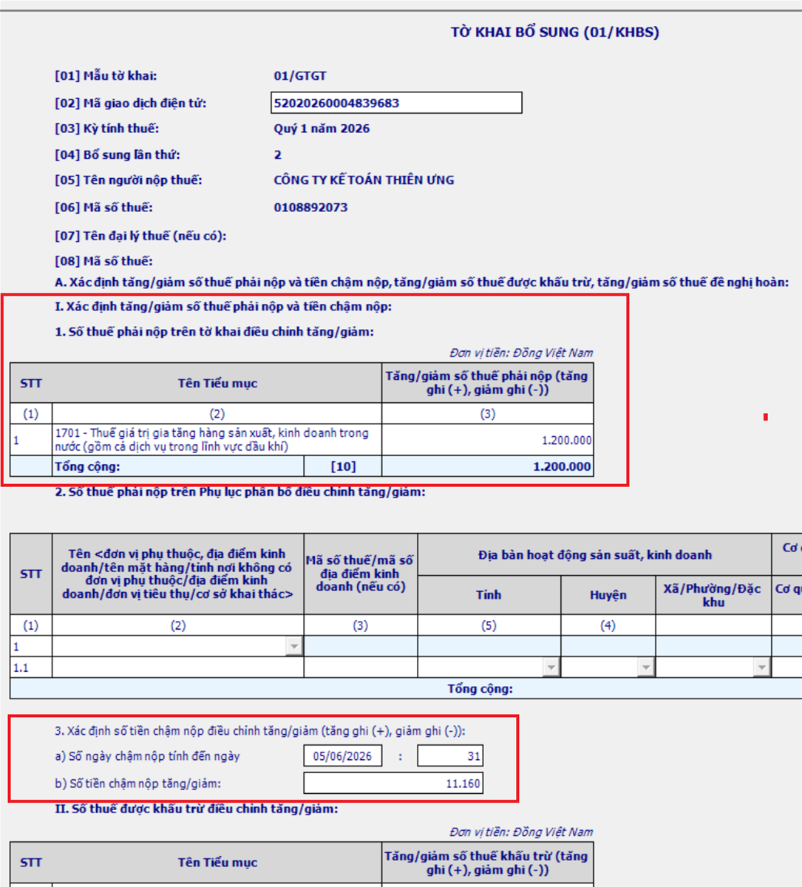
Kết quả đang thuộc vào trường hợp 1:
Mã chỉ tiêu số [10] > 0 => Kết quả: Tăng số tiền thuế GTGT còn phải nộp
=> Phải mang số tiền phát sinh dương tại chỉ tiêu 10 đi nộp, cùng với số tiền phạt chậm nộp tại mục 3, phần I (nếu có) (phần mềm tự động tính, cho phép sửa -> Cần phải kiểm tra và xác định lại (nếu phần mềm tính không đúng)
=> Vậy là, sau khi làm tờ khai điều chỉnh bổ sung lần 2 cho tờ khai thuế GTGT quý 1/2026 thì công ty Diệu Tâm phải nộp các khoản tiền sau về NSNN:
+ Tiền thuế phải nộp tăng thêm: 1.200.000đ (Số tiền phát sinh dương tại chỉ tiêu số 10 trên TỜ KHAI BỔ SUNG (01/KHBS)
+ Tiền phạt chậm nộp: 11.160đ
=> Ngày 05/06/2026, Công ty Diệu Tâm đã nộp thêm số tiền 1.200.000 + 11.160 = 1.211.160đ về NSNN
+ Tiền phạt chậm nộp: 11.160đ
=> Ngày 05/06/2026, Công ty Diệu Tâm đã nộp thêm số tiền 1.200.000 + 11.160 = 1.211.160đ về NSNN
Bước 9: Ghi lý do điều chỉnh
Thực hiện tại phụ lục 01-1/KHBS bản giải trình khai bổ sung
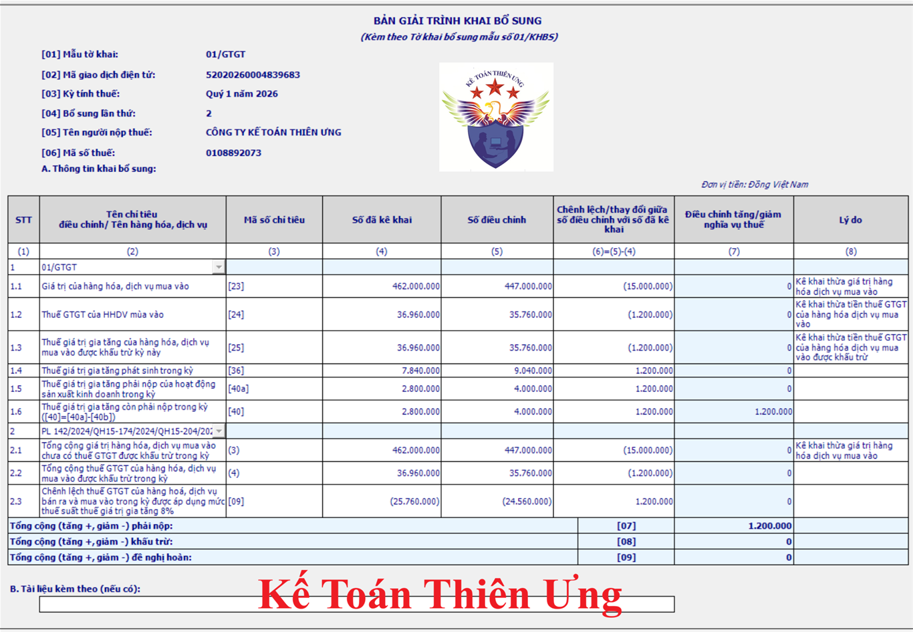
Bước 10: ấn “Ghi” để kiểm tra thông tin
Bước 11: Kết xuất XML và gửi tờ khai bổ sung qua mạng
Bước 12: Nộp số tiền thuế tăng thêm sau khi điều chỉnh và tiền phạt chậm nộp (Nếu có)
Bước 12: Nộp số tiền thuế tăng thêm sau khi điều chỉnh và tiền phạt chậm nộp (Nếu có)
Đối với tình huống của công ty Diệu Tâm thì sau khi làm tờ khai điều chỉnh bổ sung cho kỳ tính thuế quý 1/2026 thì thì ra kết quả là tại Mã chỉ tiêu số [10] = 1.200.000 > 0
=> Kết quả thuộc vào Trường hợp 1: Tăng số tiền thuế GTGT còn phải nộp => Phải nộp về NSNN số tiền phát sinh dương tại chỉ tiêu số 10 là 1.200.000, cùng với số tiền phạt chậm nộp tại mục 3, phần I là 11.160đ
Như vậy là các bạn đã kê khai điều chỉnh, bổ sung thuế GTGT xong!
=================================
Lưu ý: Đối với các Sai sót không làm ảnh hưởng đến tiền thuế:
Những lỗi sai như: Kê khai sai Giá trị hàng hóa mua vào (Chỉ tiêu 23); Kê khai sai Doanh thu hàng hóa, dịch vụ bán ra (Chỉ tiêu 29, 30, 32, 32a)
Cách kê khai bổ sung điều chỉnh:
- Vào Tờ khai kỳ kê khai sai - > Chọn :"Tờ khai bổ sung" - > Sửa lại cho đúng các Chỉ tiêu kê khai sai -> Kết xuất XML, rồi nộp qua mạng.
- Hiện tại trên phần mềm HTKK đã tích hợp hồ sơ khai bổ sung -> Nên bạn chỉ cần kết xuất toàn bộ rồi nộp qua mạng là xong.
- Hồ sơ gồm: Tờ khai điều chỉnh bổ sung và Bản giải trình khai bổ sung (KHBS), tài liệu liên quan nếu thì gửi đính kèm file nhé.
Ví Dụ: Ngày 28/8/2026 Công ty tư vấn Minh Phúc phát hiện Tờ khai thuế GTGT quý 2/2026 bị sai giá trị hàng hóa mua vào (tức là sai Chỉ tiêu 23)
- Tờ khai lần đầu khai vào Chỉ tiêu 23: 25.000.000 (Nhưng đúng phải là: 250.000.000)
Cách kê khai bổ sung thuế GTGT:
- Vào Tờ khai quý 2/2026 - > Chọn :"Tờ khai bổ sung" - > Tìm đến và Sửa lại cho đúng Chỉ tiêu 23 (Nhập đúng lại là: 250.000.000).
- Tiếp đó bấm vào "Tổng hợp KHBS" để phần mềm tổng hợp số liệu sang bên "Bản giải trình khai bổ sung, điều chỉnh (KHBS)".
- Tiếp đó bấm vào sheet "KHBS" để diễn giải vào mục 2 "Lý do khác" các bạn bị lỗi như nào thì diễn giải vào đây để Cơ quan thuế biết được là DN kê khai bổ sung điều chỉnh mục nào nhé.
-> Sau khi nhập xong -> Kết xuất Tờ khai, rồi nộp qua mạng là xong (Không bị xử phạt nhé)
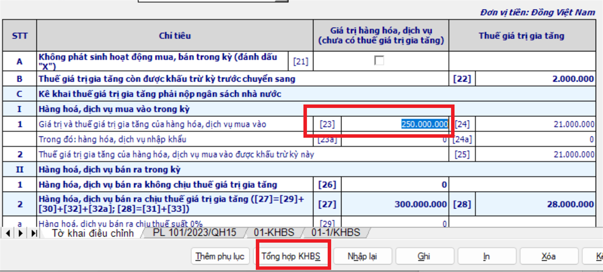
(Sai ở chỉ tiêu nào thì các bạn điều chỉnh trực tiếp tại chỉ tiêu đó về số đúng)
==============================
PHẠT VI PHẠM ĐỐI VỚI HÀNH VI KÊ KHAI SAI (làm sai tờ khai thuế GTGT)
- Nếu nộp hồ sơ kê khai bổ sung điều chỉnh trước khi CQT công bố quyết định thanh tra, kiểm tra tại doanh nghiệp:
+ Doanh nghiệp tự phát hiện ra tờ khai thuế bị sai => Sau đó làm điều chỉnh bổ sung và nộp lại tờ khai đúng trước khi CQT công bố quyết định kiểm tra tại doanh nghiệp thì: Không bị phạt
+ Nhưng nếu việc kê khai điều chỉnh bổ sung làm tăng số tiền thuế phải nộp thì: sẽ bị phạt chậm nộp tiền thuế nếu đã hết hạn nộp tiền thuế của kỳ có sai sót đó
- Nếu Doanh nghiệp làm sai nhưng không tự giác điều chỉnh hoặc nộp tờ khai điều chỉnh bổ sung sau khi CQT phát hiện ra khi kiểm tra sẽ bị phạt theo quy định tại Nghị định 125/2020/NĐ-CP được sửa đổi bởi Điểm a Khoản 5 Điều 1 Nghị định 310/2025/NĐ-CP có hiệu lực từ ngày 16/01/2026
--------------------------------------------------------------------------------------------
Các bạn muốn học thực hành tính thuế - kê khai thuế tháng/quý, điều chỉnh bổ sung, xử lý hóa đơn chứng từ, quyết toán thuế TNCN, TNDN... trực tiếp trên chứng từ thực tế.
Có thể tham gia: Lớp học kế toán thuế thực hành chuyên sâu.
Có thể tham gia: Lớp học kế toán thuế thực hành chuyên sâu.
----------------------------------------------------------------------